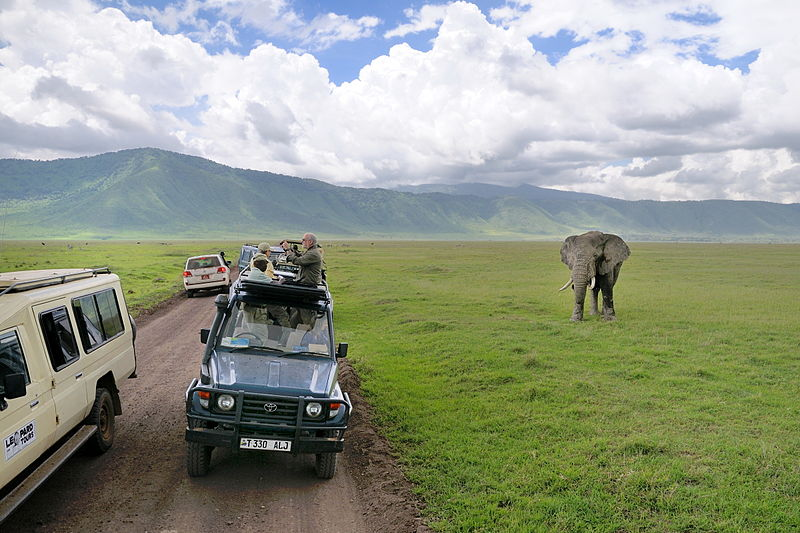
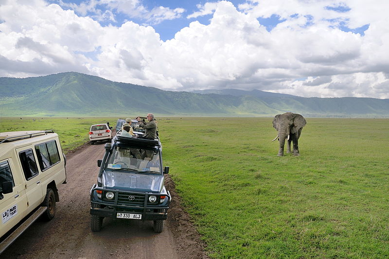

 Ngorongoro is home to lush green, rain-watered vegetation, as well as desert plants.The area has uncultivated lowland vegetation, arid and semi-arid plant communities, abundant short grass used for grazing and highland forests.
The creater basin is covered by open short grass plains with fresh and brackish water lakes, marshes,swamps and two patches of Acacia wooldland. The Lerai Forest is home to the Yellow Fever tree abnd Acacia, while Laiyanai Forest has Pillar Wood and Acacia Lahai.
The undulating plains to the west are grass-covered with occasional Umbrella Acacia and Commiphora Africana trees. Blackthorn Acacia and Zebrawood dominate in the drier conditions beside lake Eyasi. These extensive grasslands and bush are rich, relatively untouched by cultivation and support very large animal populations.

Kilimanjaro National Park houses Mount Kilimanjaro, remaining at 5,985 meters tall, the most fundamental mountain pinnacle of Africa and the world's tallest unattached mountain. Mount Kilimanjaro is a champion among the most prominent sights in Africa, sorted out toward the east of Arusha and north of the adjacent region of Moshi.The Kilimanjaro national park has gathered vegetation that adjusts well-ordered as you rise to climb Kili's pinnacle. The vegetation of the delight center comes to from the Savannah meadows to the montane woods impelling the heath area and moorlands to raised deserts at the apex of Kilimanjaro.
KILIMANJARO NATIONAL PARK WILDLIFE ATTRACTION
Leopards, elephants, buffalo, the risked Abbot's duikers, and other little pronghorns, little gazelles, mandrills, Columbus monkeys, support babies, and elands are found in the montane forest regions of the park.Kilimanjaro National Park similarly has in excess of 150 aviary fauna species of which some are endemic to the region while others are transient. White-necked Raven, blue napped mousebirds, since quite a while back pursued trogon, diminish hornbill, African fish hawks, white-cheeked barbet and African diminutive person kingfisher are a fragment of the feathered animals that can be found in the preoccupation center.
OTHER ATTRACTIONS.
Other than the climbing, this exceptional peak a gathering of activities should be conceivable in the distraction concentrate such visiting its fondness, seeing untamed life on its slopes, ascertaining trout or making a trip to the Chala Crater Lake at the southeastern assessments of the mountain. Kilimanjaro Park has a lot to offer.

")
")